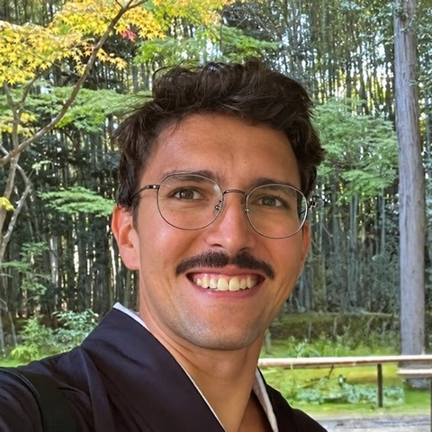

Hey there 👋
My name is Skander Garroum.

Currently I am investing first checks in robotics companies with PROTOTYPE, doing research for our YouTube channel, obsessing over how the future gets built on LinkedIn and Substack, and running the Climate Solutions community & Substack Climate Drift.
The journey (so far):
- Grew up in Germany, Paris & Hong Kong
- At 16, I met a founder on a ferry in China
- At 19, I exited my first company and asked what just happened
- Studied economics → a few frameworks helped, most didn't
- Fell hard for data, network theory, and development economics
- Moved to San Francisco
- Joined the Startup Genome Project at Stanford to learn why startups live or die
- Helped build product and growth at Compass, a data benchmarking spinout
- Compass acquired by Sage, where our team became the AI division
- Co-founded Airy, real-time AI data infrastructure, between Berlin and SF
- A few years, a couple of raises, product launches and stories later: Airy sold to the category leader, then to IBM
- Co-founded Climate Drift, my attempt to do something useful about the climate problem
- Now investing and researching at PROTOTYPE from Berlin
Check out some of my content here:
→ Follow along my daily research into how we build the future on LinkedIn
→ Read my long-form essays on "Why Solarpunk is already happening in Africa", Climate solutions and more
→ Or just watch one of our YouTube videos